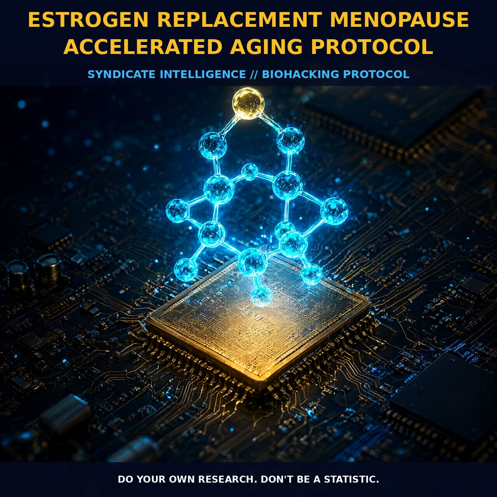

Estrogen Replacement Menopause Accelerated Aging Protocol

ESTROGEN REPLACEMENT AND MENOPAUSAL ACCELERATED AGING PROTOCOL
MECHANICS
Post-menopausal estrogen depletion acts as a primary driver of accelerated biological aging, fundamentally altering the structural integrity and visible quality of skin tissue. Declining estrogen levels trigger a cascade of cellular changes including accelerated collagen breakdown, decreased elastin production, and impaired moisture retention within the dermal matrix. These molecular shifts translate directly into physical symptoms such as thinning skin, loss of elastic recoil, dryness, and the formation of deep wrinkles, marking menopause not merely as a reproductive milestone but as a systemic aging event. Recent work from the Buck Institute’s Center for Female Reproductive Longevity and Equality positions estrogen replacement as an indispensable component of anti-aging strategy, moving it beyond simple quality of life management to a potentially life-saving intervention that mitigates these accelerated aging markers.
The mechanism of action is highly receptor-specific, with topical applications offering a superior pharmacokinetic profile by targeting beta-type estrogen receptors which are abundant in facial skin while minimizing systemic absorption risks. Oral estrogen often fails to deliver sufficient concentrations to the dermis, whereas traditional topical creams risk excessive systemic uptake, potentially disrupting hormonal balance; therefore, formulations that remain localized within the skin tissue provide the optimal therapeutic window. This localized delivery modulates the local microenvironment without the broad systemic effects associated with full hormone replacement therapy, allowing for precise rejuvenation of the cutaneous architecture. By selectively engaging these beta receptors, the treatment directly addresses the enzymatic and structural degradation processes that define post-menopausal dermal aging.
BIOLOGICAL LEVERAGE
The physiological leverage provided by estrogen replacement extends beyond superficial aesthetic improvements to influence broader metabolic and cardiovascular health profiles associated with longevity. The decline in sex hormones like estradiol, progesterone, and DHEA as one ages drives a reduction in muscle mass, increased body fat, lower bone density, and impaired sleep quality, creating a biological state conducive to further aging. By restoring estrogen levels, particularly through bioidentical forms that mirror the exact hormonal cycle of peak reproductive years, individuals can mitigate these metabolic shifts and maintain physiological function closer to their younger baseline. This restoration supports not only sexual pleasure and vascular health but also helps offset the increase in breast cancer risk previously noted with non-human estrogens, as the overall reduction in other cancer types balances the specific risks associated with hormone therapy.
Furthermore, the integration of estrogen replacement with other age-management strategies creates a synergistic effect on long-term biological viability. The controversial history of hormone replacement therapy was largely driven by early studies using nonhuman estrogens and modified progesterone, which showed higher risks for stroke and cardiovascular disease in specific cohorts. However, contemporary approaches utilizing bioidentical hormones demonstrate a more favorable risk-benefit ratio, with benefits such as reduced hip and back fractures outweighing the slight increase in breast cancer incidence. This recalibration allows for estrogen to be viewed as a foundational pillar of age management rather than a marginal treatment, supporting immune system strength and lowering chronic inflammation levels when cycled naturally alongside other pre-hormones like DHEA.
TACTICAL IMPLEMENTATION
For practical application, the selection of hormone sources and delivery methods is critical to achieving the desired localized anti-aging effects without systemic disruption. Bioidentical hormones are preferred over synthetic alternatives because they are structurally identical to endogenous compounds, reducing the likelihood of adverse metabolic responses. For those seeking to avoid systemic side effects while targeting facial aging, topical applications that stay within the skin layer offer a potent solution for enhancing collagen and elastin locally. This approach is particularly effective when combined with nanofat injections into superficial skin layers, which adds biological anti-aging benefits to surgical or non-surgical facial rejuvenation procedures by stimulating local tissue regeneration through enriched mesenchymal stem cells.
Dosage and timing should be aligned with the individual’s natural hormonal rhythm, with some protocols suggesting cycling between testosterone, DHEA, and estrogen to mimic the pre-menopausal state. For men experiencing andropause at a similar age to female menopause, this cycling helps maintain muscle mass and immune function while avoiding the decline in testosterone that contributes to aging. Women may choose to mirror their peak reproductive hormonal cycle, with some maintaining menstruation into their sixties by continuing bioidentical therapy, thereby extending the youth-associated hormonal environment. Monitoring biomarkers such as estradiol levels, sex hormone-binding globulin, and DHEA sulfate can help fine-tune the protocol, ensuring that estrogen replacement remains a precise tool for biological optimization rather than a broad-spectrum supplement with variable outcomes.
Do your own research. Don't be a statistic.
Prostar Life Hack
Dosage and timing should be aligned with the individual’s natural hormonal rhythm, with some protocols suggesting cycling between testosterone, DHEA, and estrogen to mimic the pre-menopausal state.
[ AUTHOR: LEAD TECHNICAL RESEARCHER ]